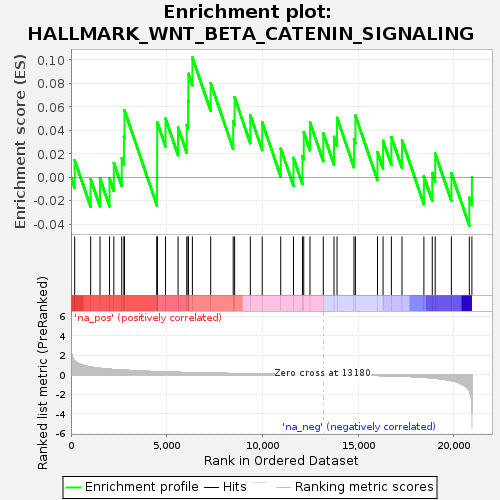
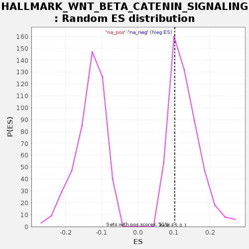

| | | Dataset | GSE18198_base_collapsed |
| Phenotype | NoPhenotypeAvailable |
| Upregulated in class | na_pos |
| GeneSet | HALLMARK_WNT_BETA_CATENIN_SIGNALING |
| Enrichment Score (ES) | 0.102169365 |
| Normalized Enrichment Score (NES) | 0.78761005 |
| Nominal p-value | 0.7237354 |
| FDR q-value | 0.8119885 |
| FWER p-Value | 1.0 |
Table: GSEA Results Summary

Fig 1: Enrichment plot: HALLMARK_WNT_BETA_CATENIN_SIGNALING
Profile of the Running ES Score & Positions of GeneSet Members on the Rank Ordered List
| SYMBOL | TITLE | RANK IN GENE LIST | RANK METRIC SCORE | RUNNING ES | CORE ENRICHMENT | | 1 | NUMB | NA | 192 | 1.426 | 0.0146 | Yes |
| 2 | NKD1 | NA | 1027 | 0.794 | -0.0015 | Yes |
| 3 | NCSTN | NA | 1516 | 0.649 | -0.0010 | Yes |
| 4 | WNT6 | NA | 2014 | 0.554 | -0.0010 | Yes |
| 5 | CTNNB1 | NA | 2237 | 0.527 | 0.0122 | Yes |
| 6 | AXIN2 | NA | 2651 | 0.472 | 0.0163 | Yes |
| 7 | PSEN2 | NA | 2764 | 0.460 | 0.0347 | Yes |
| 8 | HDAC5 | NA | 2793 | 0.455 | 0.0572 | Yes |
| 9 | JAG1 | NA | 4492 | 0.305 | -0.0002 | Yes |
| 10 | NOTCH4 | NA | 4499 | 0.304 | 0.0233 | Yes |
| 11 | HDAC11 | NA | 4502 | 0.304 | 0.0470 | Yes |
| 12 | WNT5B | NA | 4938 | 0.274 | 0.0500 | Yes |
| 13 | DLL1 | NA | 5593 | 0.238 | 0.0426 | Yes |
| 14 | GNAI1 | NA | 6046 | 0.215 | 0.0448 | Yes |
| 15 | PPARD | NA | 6115 | 0.210 | 0.0653 | Yes |
| 16 | DVL2 | NA | 6134 | 0.210 | 0.0883 | Yes |
| 17 | NCOR2 | NA | 6342 | 0.199 | 0.1022 | Yes |
| 18 | CCND2 | NA | 7298 | 0.160 | 0.0803 | No |
| 19 | FZD1 | NA | 8473 | 0.117 | 0.0480 | No |
| 20 | WNT1 | NA | 8548 | 0.115 | 0.0682 | No |
| 21 | MAML1 | NA | 9369 | 0.091 | 0.0528 | No |
| 22 | HEY1 | NA | 9990 | 0.073 | 0.0470 | No |
| 23 | AXIN1 | NA | 10957 | 0.047 | 0.0246 | No |
| 24 | FZD8 | NA | 11622 | 0.031 | 0.0166 | No |
| 25 | JAG2 | NA | 12092 | 0.022 | 0.0180 | No |
| 26 | CSNK1E | NA | 12159 | 0.021 | 0.0386 | No |
| 27 | TCF7 | NA | 12486 | 0.014 | 0.0469 | No |
| 28 | HEY2 | NA | 13180 | -0.000 | 0.0375 | No |
| 29 | RBPJ | NA | 13740 | -0.011 | 0.0346 | No |
| 30 | PTCH1 | NA | 13899 | -0.015 | 0.0508 | No |
| 31 | NOTCH1 | NA | 14783 | -0.033 | 0.0324 | No |
| 32 | DKK4 | NA | 14858 | -0.036 | 0.0527 | No |
| 33 | CUL1 | NA | 16011 | -0.082 | 0.0214 | No |
| 34 | SKP2 | NA | 16304 | -0.095 | 0.0312 | No |
| 35 | ADAM17 | NA | 16738 | -0.116 | 0.0343 | No |
| 36 | DKK1 | NA | 17292 | -0.154 | 0.0317 | No |
| 37 | LEF1 | NA | 18436 | -0.265 | 0.0008 | No |
| 38 | HDAC2 | NA | 18874 | -0.332 | 0.0037 | No |
| 39 | TP53 | NA | 19027 | -0.363 | 0.0203 | No |
| 40 | FRAT1 | NA | 19872 | -0.606 | 0.0037 | No |
| 41 | KAT2A | NA | 20810 | -1.610 | -0.0173 | No |
| 42 | MYC | NA | 20944 | -3.875 | 0.0001 | No |
Table: GSEA details [plain text format]

Fig 2: HALLMARK_WNT_BETA_CATENIN_SIGNALING: Random ES distribution
Gene set null distribution of ES for HALLMARK_WNT_BETA_CATENIN_SIGNALING